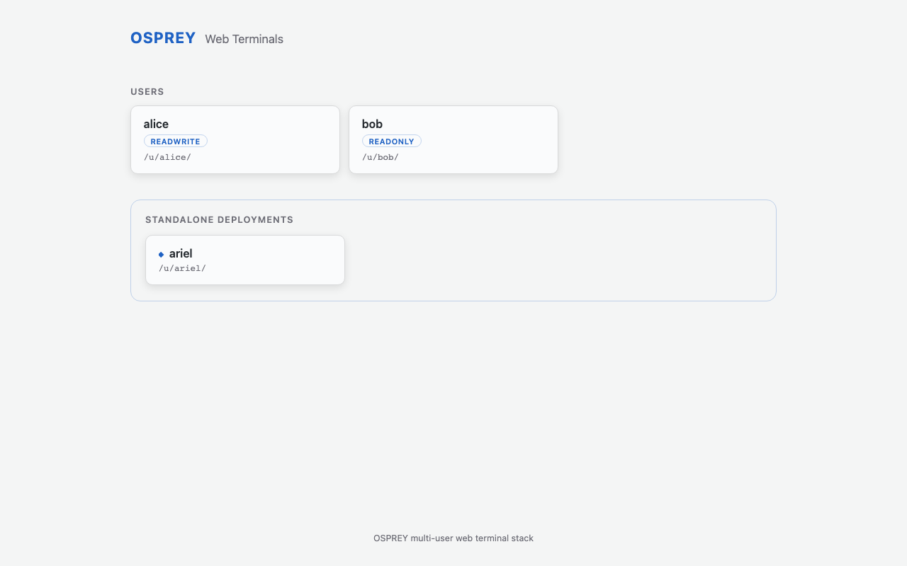

Run the Multi-User Demo#
How to stand up the two-persona multi-user Web Terminal from a fresh checkout:
one osprey build renders the demo project, one osprey deploy up brings up
a landing page and a separate container for each user — alice, whose session
is read-only, and bob, whose session can write to the control system. No
per-user builds, no registry.
What You’ll Learn
Building the demo project from the
multi-user-demopresetHow
osprey deploy upauto-renders both persona projects and builds their imagesThe grouped landing page, and what separates the read-only and read-write tiers
Seeing the write boundary refuse — and approve — a real write
Logging out and switching between users
The demo’s honest security posture (plain HTTP on a trusted host)
Prerequisites: Docker (or Podman) installed; your model-provider
credentials (the preset defaults to Anthropic — set ANTHROPIC_API_KEY).
The demo in two commands#
From a fresh checkout, build the demo project from the bundled preset, then bring the stack up from inside it:
# 1. Render the demo project from the multi-user-demo preset
osprey build multi-user-demo --preset multi-user-demo
# 2. From inside the project, bring the whole stack up
cd multi-user-demo
osprey deploy up
That is the entire setup. The multi-user-demo preset ships a
modules.web_terminals block that turns this single project into the
two-persona product, so no extra flags or configuration are needed.
Note
The personas’ agent needs your provider credentials at run time. Add them to
the project’s .env before osprey deploy up (the preset defaults to
Anthropic — set ANTHROPIC_API_KEY).
Note
Running from a source checkout of the OSPREY repository rather than a
released install? Add --dev to osprey deploy up. The images install
the framework from PyPI by default, and a source tree’s version isn’t
published there; --dev bakes your local checkout into the images
instead.
What osprey deploy up does#
The one osprey deploy up invocation does three things in order, all from the
single project you built:
Auto-renders the two persona projects. The preset declares a readonly persona and a readwrite persona, each its own rendered OSPREY project. For any persona whose project directory does not yet exist,
deploy uprenders it from the persona’sbuild_profilepreset — the equivalent ofosprey build multi-user-demo-readonly --preset multi-user-demo-readonly— landing it as a sibling of the demo project (../multi-user-demo-readonlyand../multi-user-demo-readwrite). An already-rendered project is user-owned and never overwritten; a half-written one errors with a remediation hint rather than being rebuilt over.Builds each persona’s image. In the preset’s local mode (
image_source: local),deploy upbuilds each persona’s…-readonly:local/…-readwrite:localimage itself from that rendered project — no registry, no CI.Brings up the stack. An nginx reverse proxy (container
mu-nginx) serves the landing page onhttp://127.0.0.1:9080, and one Web Terminal container comes up per user —mu-web-aliceon host port9091andmu-web-bobon9092— each reached through the landing page. (Themu-prefix is the preset’sfacility.prefix; change it for your site.)
Alongside the two user containers, the preset brings up its supporting services: PostgreSQL and OpenObserve (storage and telemetry). That is the whole stack — the demo is deliberately small, so what you are looking at is the multi-user machinery, not a control-room product wrapped around it.
Stop the stack again with osprey deploy down; check on it with
osprey deploy status.
Note
The web stack runs with host networking. On Linux, http://127.0.0.1:9080
is reachable as-is. On macOS, a container’s “host” is Docker Desktop’s
Linux VM — enable host networking in Docker Desktop (Settings → Resources
→ Network) so the stack’s ports reach your browser.
If another OSPREY deployment already occupies a service port on this host,
change it in the project’s config.yml (e.g.
services.postgresql.port_host) before osprey deploy up.
The landing page#
Open http://127.0.0.1:9080. The landing page groups the users into cards,
each labelled with the persona it resolves to:
{kind=link}

The grouped landing page: alice resolves to the readonly persona, bob to readwrite. Click a card to open that user’s session.#
alice is a bare roster entry, so she resolves to the preset’s
default_persona (readonly). bob names his persona (readwrite) explicitly.
Clicking a card opens that user’s terminal at /u/<name>/, proxied by nginx
to the user’s own container.
Two sessions, two write postures#
Each persona is a self-contained OSPREY project with its own permissions,
because permissions are a property of a project’s config.yml — the two tiers
are genuinely different agents, not one agent with a UI toggle. They differ on
exactly one config key, the reference monitor’s master write switch:
User |
|
What that means in the session |
|---|---|---|
alice |
|
Read-only. Channel reads, the channel finder, the archiver, and logbook search all work — but every write surface refuses: channel writes, read-write Python execution, all of it, from the single switch. |
bob |
|
Write-capable — and supervised, not unguarded. A channel write still passes the writes-check hook, per-channel min/max limits, and a human approval prompt before the connector executes it. |
The posture is a property of the session, not a statement about the person: which teammates get a write-capable tier is your roster’s call, and the demo’s point is that the framework provisions genuinely different postures from one deployment.
See the boundary work#
The boundary is enforced, not asserted — so you can watch it act. Open each user’s terminal and ask both agents to do the same two things:
Read. Ask either agent about a channel — a corrector setpoint, a BPM reading. Both sessions answer identically: reads are ungated on both tiers.
Write. Ask each agent to change a setpoint. In bob’s session the write goes to a human approval prompt, then executes (against the demo’s mock control system, which accepts and stores it). In alice’s session the same request is refused: the write tool is denied in her project’s rendered permissions, and the refusal states plainly that writes are disabled in her configuration.
Both agents carry the same tool surface — the readonly tier is not a stripped-down agent that never heard of writing. It is the same agent whose write path is switched off in its own project, which is exactly what you want to demonstrate to a control room: the boundary holds at the enforcement layer, not at the menu.
Logging out and switching users#
Every session’s header carries a logout button. It POSTs to the terminal’s logout route, clears the local session pointer, and returns you to the landing page. From there, pick another card to open a different user — a switch always starts a fresh session for the new user rather than resuming the previous one.
Security posture#
This demo is built to run on a single trusted host — your workstation or a control-room machine you already trust. Be clear-eyed about what that means:
Traffic is plain HTTP. nginx serves the landing page and proxies every terminal over unencrypted HTTP on
127.0.0.1. There is no TLS.There is no authentication. Anyone who can reach
127.0.0.1:9080can open any user’s terminal. The user cards are a convenience for switching identities on a shared trusted machine, not an access-control boundary.
Authentication and TLS are recognized, config-gated seams in the web-terminal schema, but they are fail-closed and inert in this release: the schema defaults to no auth and plain HTTP, and no other value is exercised yet. Do not expose this stack to an untrusted network or treat the persona split as a security control — it is a capability split, enforced per project, not an identity or access boundary.